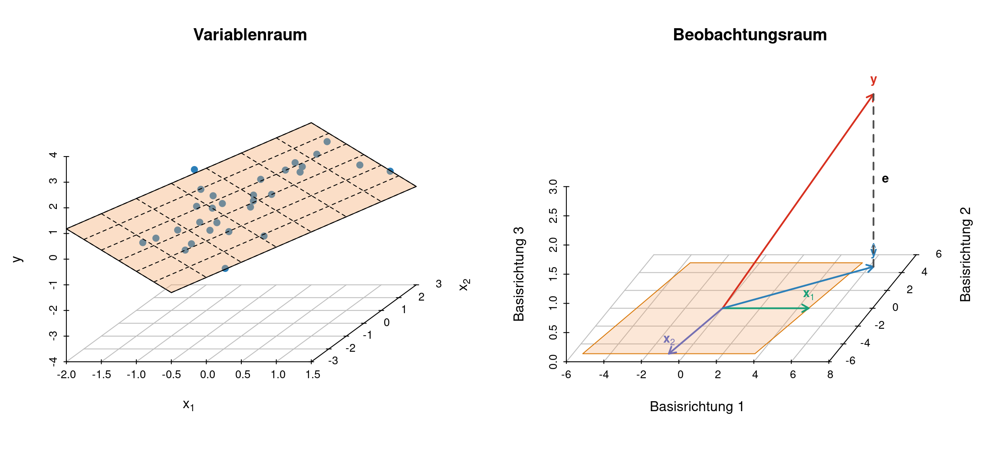

Ausgangspunkt: eine Datenmatrix
Wir betrachten eine Regression mit zwei Eingangsgrössen \(x_1\) und \(x_2\) und einer Zielgrösse \(y\). Die beobachteten Werte fassen wir zunächst in der erweiterten Datenmatrix
\[ \mathbf D = \begin{pmatrix} x_{11} & x_{12} & y_1\\ x_{21} & x_{22} & y_2\\ \vdots & \vdots & \vdots\\ x_{n1} & x_{n2} & y_n \end{pmatrix} = \begin{pmatrix} \mathbf x_1 & \mathbf x_2 & \mathbf y \end{pmatrix} \in\mathbb R^{n\times 3} \]
zusammen. Die Zeilen von \(\mathbf D\) entsprechen den \(n\) Beobachtungen, die Spalten den drei Variablen \(x_1\), \(x_2\) und \(y\).
Dieselbe Matrix kann geometrisch aus zwei verschiedenen Richtungen betrachtet werden:
- Jede Zeile ist ein Beobachtungsvektor in \(\mathbb R^3\).
- Jede Spalte ist ein Variablenvektor in \(\mathbb R^n\).
Diese beiden Sichtweisen führen zum Zeilenraum und zum Spaltenraum.
Zeilenraum
Die \(i\)-te Zeile von \(\mathbf D\) ist
\[ \mathbf d_i = \begin{pmatrix} x_{i1}\\ x_{i2}\\ y_i \end{pmatrix} \in\mathbb R^3. \]
Sie beschreibt eine einzelne Beobachtung anhand ihrer Werte auf den drei Variablen. Der Zeilenraum ist die lineare Hülle aller Zeilenvektoren:
\[ \operatorname{Row}(\mathbf D) = \operatorname{span} \left\{ \mathbf d_1,\ldots,\mathbf d_n \right\} \subseteq\mathbb R^3. \]
In der üblichen Darstellung werden die \(n\) Beobachtungsvektoren als \(n\) Punkte im dreidimensionalen Raum gezeichnet. Die Achsen dieses Raums entsprechen den Variablen \(x_1\), \(x_2\) und \(y\). Deshalb bezeichnen wir diesen Raum als Variablenraum.
Der Begriff bezieht sich auf die Bedeutung der Koordinatenachsen: Die Punkte repräsentieren Beobachtungen, ihre Koordinaten aber Variablen.
Spaltenraum
Die Spalten der erweiterten Datenmatrix sind
\[ \mathbf x_1= \begin{pmatrix} x_{11}\\ \vdots\\ x_{n1} \end{pmatrix}, \qquad \mathbf x_2= \begin{pmatrix} x_{12}\\ \vdots\\ x_{n2} \end{pmatrix}, \qquad \mathbf y= \begin{pmatrix} y_1\\ \vdots\\ y_n \end{pmatrix}. \]
Jeder dieser Vektoren enthält die Werte einer Variablen für alle \(n\) Beobachtungen. Deshalb gilt
\[ \mathbf x_1,\mathbf x_2,\mathbf y\in\mathbb R^n. \]
Der Spaltenraum von \(\mathbf D\) ist
\[ \operatorname{Col}(\mathbf D) = \operatorname{span} \left\{ \mathbf x_1,\mathbf x_2,\mathbf y \right\} \subseteq\mathbb R^n. \]
Die Koordinaten dieses Raums entsprechen den \(n\) Beobachtungen. Deshalb wird \(\mathbb R^n\) in diesem Zusammenhang als Beobachtungsraum bezeichnet.
Obwohl \(\mathbb R^n\) möglicherweise hochdimensional ist, liegen die drei Vektoren \(\mathbf x_1\), \(\mathbf x_2\) und \(\mathbf y\) gemeinsam in einem höchstens dreidimensionalen Unterraum. Nur dieser Unterraum muss für die Abbildung dargestellt werden.
Die beiden Darstellungen
Der folgende Code simuliert Daten aus dem Modell
\[ y_i=1+1.2x_{i1}-0.8x_{i2}+\varepsilon_i. \]
Links werden die Zeilen von \(\mathbf D\) als Punkte im Variablenraum \(\mathbb R^3\) dargestellt. Rechts werden die Spalten von \(\mathbf D\) als Vektoren im Beobachtungsraum aufgefasst. Gezeichnet wird dort lediglich der von ihnen aufgespannte dreidimensionale Unterraum.

Der Spaltenraum als Modellraum
Für die Regression müssen wir zwischen der erweiterten Datenmatrix \(\mathbf D\) und der eigentlichen Designmatrix unterscheiden. Ohne Achsenabschnitt lautet die Designmatrix
\[ \mathbf X = \begin{pmatrix} \mathbf x_1 & \mathbf x_2 \end{pmatrix} \in\mathbb R^{n\times 2}. \]
Das lineare Modell ist
\[ \mathbf y = \mathbf X\boldsymbol\beta+\boldsymbol\varepsilon = \beta_1\mathbf x_1+ \beta_2\mathbf x_2+ \boldsymbol\varepsilon. \]
Alle durch das Modell möglichen Vorhersagevektoren haben die Form
\[ \mathbf X\boldsymbol\beta = \beta_1\mathbf x_1+ \beta_2\mathbf x_2. \]
Sie liegen daher im Spaltenraum der Designmatrix:
\[ \operatorname{Col}(\mathbf X) = \operatorname{span} \left\{ \mathbf x_1,\mathbf x_2 \right\} \subseteq\mathbb R^n. \]
Dieser Spaltenraum ist der Modellraum. Sind die beiden Prädiktorvektoren linear unabhängig, handelt es sich um eine zweidimensionale Ebene im \(n\)-dimensionalen Beobachtungsraum.
Der beobachtete Vektor \(\mathbf y\) liegt im Allgemeinen nicht in dieser Ebene. Die Methode der kleinsten Quadrate bestimmt den Vektor im Modellraum, der \(\mathbf y\) bezüglich der euklidischen Distanz am nächsten liegt:
\[ \widehat{\mathbf y} = \mathbf X\widehat{\boldsymbol\beta}. \]
Geometrisch ist \(\widehat{\mathbf y}\) die orthogonale Projektion von \(\mathbf y\) auf \(\operatorname{Col}(\mathbf X)\):
\[ \widehat{\mathbf y} = \mathbf P_X\mathbf y, \qquad \mathbf P_X = \mathbf X (\mathbf X^{\mathsf T}\mathbf X)^{-1} \mathbf X^{\mathsf T}. \]
Der Residuenvektor
\[ \mathbf e = \mathbf y-\widehat{\mathbf y} \]
steht senkrecht auf dem gesamten Spaltenraum der Designmatrix:
\[ \mathbf X^{\mathsf T}\mathbf e=\mathbf 0. \]
Dies sind genau die Normalgleichungen der Kleinste-Quadrate-Schätzung.
Modell mit Achsenabschnitt
Enthält das Regressionsmodell einen Achsenabschnitt, ist
\[ \mathbf X = \begin{pmatrix} \mathbf 1 & \mathbf x_1 & \mathbf x_2 \end{pmatrix} \]
und damit
\[ \operatorname{Col}(\mathbf X) = \operatorname{span} \left\{ \mathbf 1,\mathbf x_1,\mathbf x_2 \right\}. \]
Der Modellraum ist dann höchstens dreidimensional. In der Abbildung wurden \(\mathbf x_1\), \(\mathbf x_2\) und \(\mathbf y\) zentriert. Dadurch wird die Richtung des Einsvektors \(\mathbf 1\) abgetrennt, und die eigentliche Projektionsgeometrie kann wieder als Projektion auf die von \(\mathbf x_1\) und \(\mathbf x_2\) aufgespannte Ebene gezeigt werden.
Zusammenfassung
| Darstellung | Dargestellte Elemente | Umgebender Raum | Linear-algebraischer Bezug |
|---|---|---|---|
| Zeilensicht, links | \(n\) Beobachtungsvektoren \((x_{i1},x_{i2},y_i)^{\mathsf T}\) | Variablenraum \(\mathbb R^3\) | Zeilen von \(\mathbf D\); ihre lineare Hülle ist \(\operatorname{Row}(\mathbf D)\) |
| Spaltensicht, rechts | Variablenvektoren \(\mathbf x_1\), \(\mathbf x_2\) und \(\mathbf y\) | Beobachtungsraum \(\mathbb R^n\) | Spalten von \(\mathbf D\); ihre lineare Hülle ist \(\operatorname{Col}(\mathbf D)\) |
| Regression, rechts | Prädiktorvektoren \(\mathbf x_1\) und \(\mathbf x_2\) | Beobachtungsraum \(\mathbb R^n\) | \(\operatorname{Col}(\mathbf X)\) ist der Modellraum |
Die beiden Darstellungen enthalten dieselben Zahlen, betrachten sie aber aus zwei verschiedenen Richtungen:
Links ist jede Beobachtung ein Vektor, dessen Koordinaten die Variablen sind. Rechts ist jede Variable ein Vektor, dessen Koordinaten die Beobachtungen sind.
Für die Geometrie der linearen Regression ist vor allem die Spaltensicht entscheidend:
\[ \boxed{ \text{Regression ist die Projektion von }\mathbf y \text{ auf }\operatorname{Col}(\mathbf X). } \]